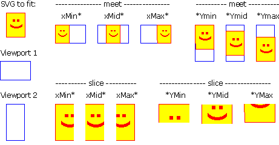

Viewbox
preserveAspectRatio를 설정하지 않아도 기본적으로 종횡비유지(preserveAspectRatio="xMidYMid meet")가 적용되어 작은쪽에 맞게 비율이 조정된다.
preserveAspectRatio를 none으로 설정할 경우 비율이 유지 되지않고 viewport에 맞게 조정된다.
heina92 님이 공유해 주신 사이트의 데모를 들어가서 'Show x & y Guidelines'를 선택 후 보면 더 쉽게 이해 할 수 있다. (강추)
interactive-svg-coordinate-system
주황색 점선은 현재 viewport의 크기
종횡비 유지(preserveAspectRatio="xMidYMid meet")
종횡비 유지안함(preserveAspectRatio="none")일 경우
PreserveAspectRatio
